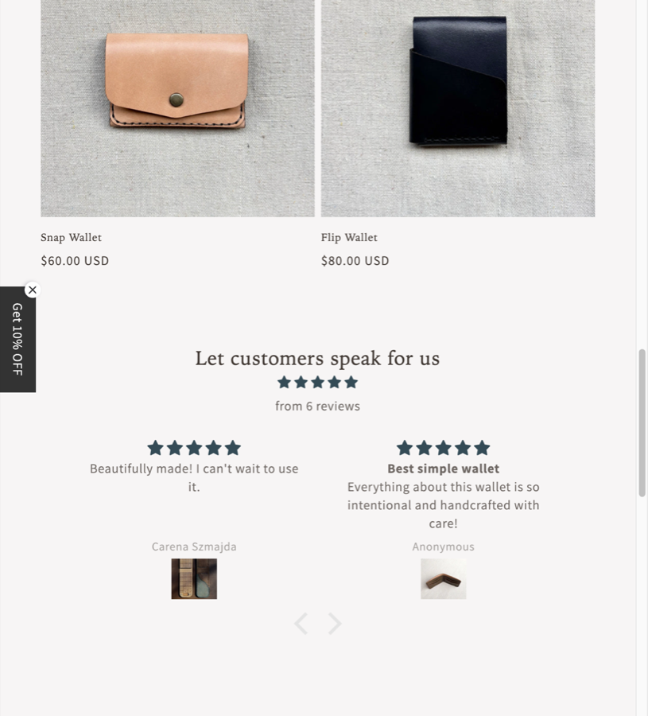
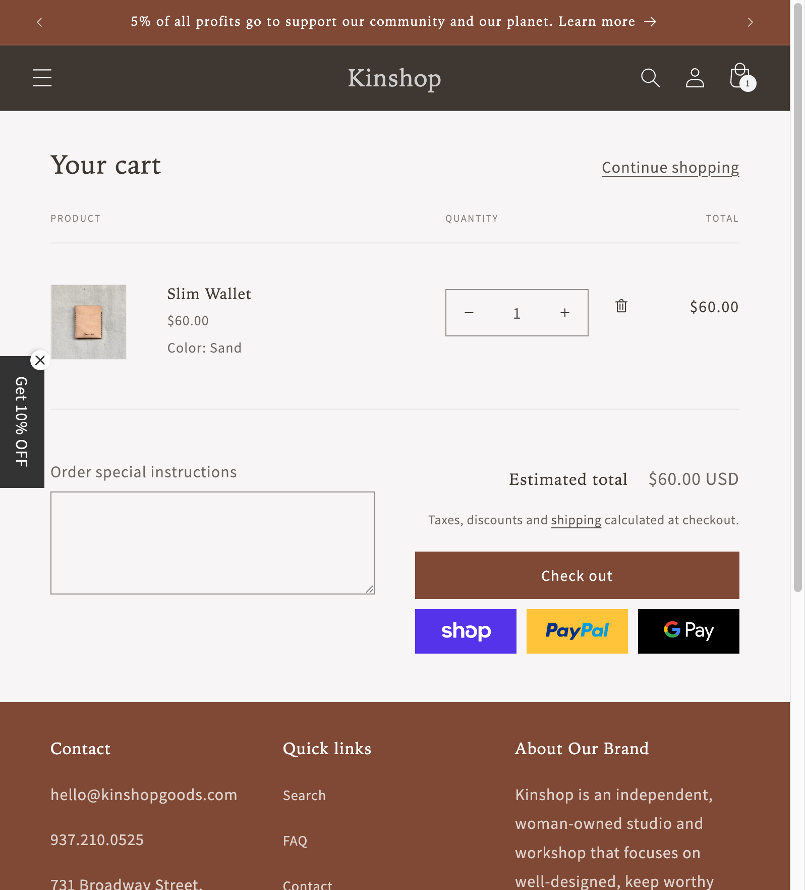
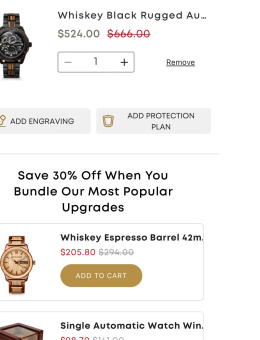
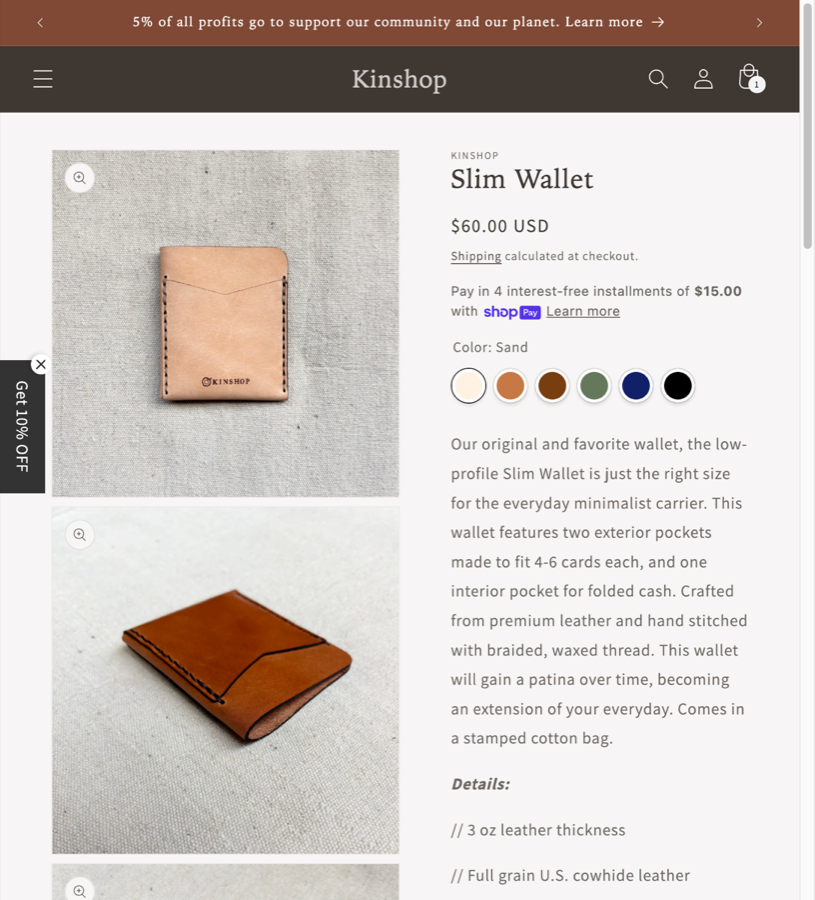
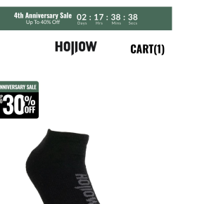
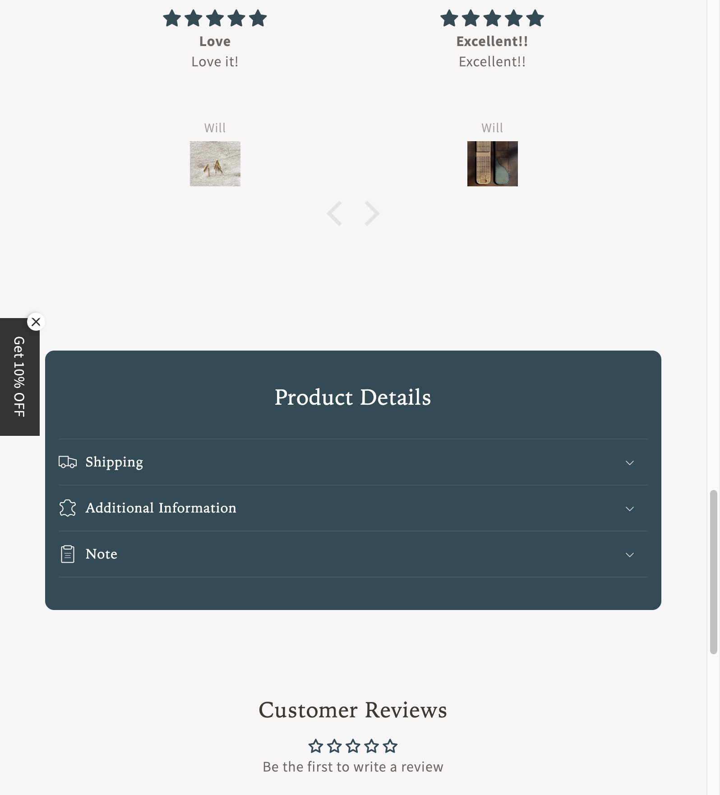
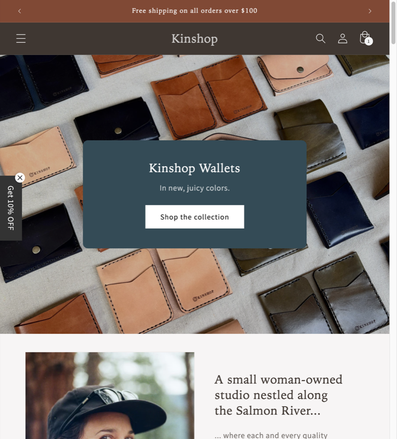

15 recommendations to improve conversion rate, average order value, and contribution margin per session.
Every brand has Conversion Leaks.
It's an always-on process of plugging them repeatedly—a Kaizen approach. Some are small and invisible until you go looking for them. Others are sitting in plain sight, quietly draining revenue every single day.
The objective is to find the specific, high-leverage changes that will move the needle for your brand. Changes that aren't just theoretical, but tied directly to how your customers shop, decide, and buy.
What follows is a series of recommendations written with one goal in mind: to improve the stability and volume of your profit year-round. So you're not just riding the highs of your best seasons, but sustaining a healthier baseline in the slower ones too.
Some of these will address obvious gaps—missing elements that can be added quickly and start producing a lift almost immediately.
Others will push you to rethink how you present the product, the brand, and the offer. So that you're not just getting more people to convert, but you're doing it in a way that deepens their connection to the brand and increases their long-term value.
Each recommendation is standalone. But together, they form a playbook that can strengthen your positioning, raise your conversion rate, and expand your average order value and lifetime value.
Here's what makes Kinshop different from most leather goods brands:
You're a woman-owned studio nestled along the Salmon River in Idaho. Every piece is handcrafted—two calloused, dye-stained hands doing the work. Your vegetable-tanned leather comes from Wickett & Craig, one of the last tanneries in the United States. No harsh chemicals. Products designed to develop their own patina over time. And 5% of profits go back to community and environmental causes.
These aren't marketing gimmicks. They're meaningful differentiators that separate Kinshop from the thousands of mass-produced leather goods flooding Amazon and Etsy.
But right now, most of these advantages are buried.
A good product says "look at me." A great brand says "come with me."
Right now, Kinshop is positioned around craftsmanship and quality, but it's framed in a way that's still widget-first. The story is there. The differentiation is there. It's just not leading.
Desire doesn't come from features. It comes from story.
You already have the bones of that story. What we're doing here is bringing it forward—building upon what's there into a well-defined thesis you can operate from, one that will scale you meaningfully.
Before we get into tactical fixes, there's something more fundamental to address.
Kinshop isn't in the leather goods business.
You're not selling leather, stitching, or card slots.
You're not here to convince people the leather is soft or the dimensions are right.
That's commodity talk. That's how brands sell when they don't have a perspective.
Every brand that competes on specs ends up in the same fight: who can say "quality" louder, who can offer a better bundle, who can slash prices first.
That race has no winners. Especially not for handcrafted goods.
What you're actually selling is a reframe.
A new way for someone to think about a decision they've already made a hundred times.
That's what a Thesis does.
A Thesis is the core perspective or belief that underlies everything your brand says.
It's not a tagline. It's not a slogan.
It's the answer to: "What does this brand believe about the world that changes how someone sees their options?"
When a Thesis is strong, it shifts how the customer evaluates their choices.
They stop comparing you to competitors on the same criteria.
They start seeing you as the obvious choice for a different reason entirely.
Without a Thesis, you're left competing on features. And features are a race to the bottom.
With a Thesis, you're selling a worldview. And worldviews create believers, not just buyers.
The most effective brands operate with two thesis layers working together:
Brand Thesis: The deeper belief your brand stands for. This is the worldview that converts browsers into believers. It's embedded in everything — your about page, your product descriptions, your packaging, your emails.
Funnel Thesis: The contrarian hook that gets attention. This contradicts a common market belief and creates curiosity. It's what brings people in the door so the Brand Thesis can convert them.
The Funnel Thesis brings people in.
The Brand Thesis makes them stay.
Most leather goods are designed to look the same forever.
Uniform. Pristine. Generic.
But that's not how real things work.
Real things develop character. They bear the marks of the life they've lived.
The crease from your pocket. The slight darkening where your thumb rests. The softening where you grip it every day.
Kinshop believes leather should tell your story.
This belief informs everything you do:
This is the deeper belief that should be embedded in every piece of content — your about page, your product descriptions, your emails, your social posts.
It's not a tagline to slap on the homepage. It's the lens through which every word should be written.
This is the contrarian hook that gets attention.
The market belief to contradict:
People assume leather goods are disposable commodities. You buy one. It looks nice for a while. It slowly falls apart. You replace it. This is the accepted lifecycle.
The default assumption is that wear = damage. That use = degradation.
The reframe:
What if wear was actually improvement?
What if the marks from daily use weren't damage — they were story?
What if the right leather actually got better over time?
This is contrarian because everyone assumes new = best, wear = decline, replace = upgrade.
But with properly-made vegetable-tanned leather, the opposite is true.
Why most leather goods get worse:
Why Kinshop leather gets better:
This funnel thesis sets up your education. It creates curiosity. It positions you as having knowledge the customer doesn't have yet.
And once they understand why their "good" leather keeps failing them, the Brand Thesis — "Leather Should Tell Your Story" — becomes the obvious answer.
Your Brand Thesis stays constant. But you can have multiple Funnel Theses that attack different market beliefs.
Here's another angle worth testing, pulled directly from your Materials page:
Market Belief: "Vegan leather is more sustainable than real leather."
This is what drives people toward synthetic leather thinking they're making an eco-friendly choice.
But you already know the truth — and you've written about it:
"Unlike plastic-based alternatives, leather naturally biodegrades over time."
"Many mass-produced options are chemically treated, layered in plastics, or bonded with glue."
The Contrarian Truth:
Vegan leather is petroleum-based plastic with better marketing.
It doesn't biodegrade — it sits in landfills for 500 years.
It falls apart in 2 years, so you buy more.
Real leather is a byproduct that would've gone to landfill anyway.
Real leather biodegrades naturally.
Real leather, properly made, lasts decades.
The tension this creates:
"Wait... my 'eco-friendly' bag is actually worse for the environment than real leather?"
That's the moment of realization that opens the door to everything else you stand for.
These headlines attack the same market belief from different angles:
"Vegan Leather Is Just Plastic With Better Marketing"
Direct and confrontational. Names the enemy explicitly. Works well for audiences already skeptical of greenwashing.
"The Most Sustainable Leather Is the Kind You Never Replace"
Reframes sustainability from material origin to longevity. Less confrontational, more philosophical. Appeals to the "buy it for life" crowd.
"Your 'Eco-Friendly' Bag Is Made of Oil"
Provocative. Creates immediate cognitive dissonance. The scare quotes around "Eco-Friendly" signal that the label is being questioned.
"Real Leather Biodegrades. 'Vegan Leather' Sits in Landfills for 500 Years."
Specific and factual. The contrast is concrete and visual. Harder to dismiss because it's making a verifiable claim.
Which to use?
Test them. The "Gets Better Every Day" thesis (Funnel Thesis #1) attacks the quality/disposability belief. These attack the sustainability belief. Different audiences, different entry points — same Brand Thesis destination.
You might find sustainability messaging resonates more on certain channels (Instagram, Pinterest) where eco-conscious buyers congregate, while the "Gets Better" angle works better on direct response ads.
Every tactical recommendation in this review becomes more powerful when it's grounded in your Thesis.
Without Thesis: Your USP section lists features — "handcrafted," "US leather," "develops patina."
With Thesis: Your USP section tells a story — "We believe leather should tell your story. Here's how every piece is made to do exactly that."
Without Thesis: Your homepage hero says "Kinshop — In new, juicy colors."
With Thesis: Your homepage hero says "Leather That Gets Better Every Day" or "Handcrafted Leather. Made to Tell Your Story."
Without Thesis: Your FAQ answers questions.
With Thesis: Your FAQ reinforces beliefs — "Will this leather really get better with age? Absolutely. Our vegetable-tanned leather is designed to be used, bruised, and loved for years..."
The Thesis is the foundation. The tactics are the architecture built on top of it.
As you implement the recommendations below, filter each one through the question: "Does this communicate that leather should tell your story?"
Testing different Funnel Theses:
You now have two distinct entry points to test:
Different audiences respond to different contrarian hooks. Test both. The one that pulls harder becomes your lead — but both can coexist across different channels and campaigns.
This is the foundation for everything else.
Microsoft Clarity is free heatmap and session recording software that lets you watch actual customer behavior on your site. Not what you think they're doing. What they're actually doing.
Where they click. Where they scroll. Where they get stuck. Where they abandon.
Most site owners make changes based on gut feeling, anecdotal feedback, or what they think is "probably" happening. The problem is that without actually seeing how people use your site, you're optimizing in the dark.
Right now, you're flying blind. You can see traffic and conversion rate in Shopify Analytics, but you can't see why people aren't converting. You're making educated guesses about what to fix, when you could be watching recordings of real customers hitting the exact friction points that cost you sales.
Session recordings are exactly what they sound like—a play-by-play replay of a visitor's session. You see where their mouse moves, where they scroll, where they hesitate, and where they click away. It's the closest thing to standing inside a physical store and quietly observing how someone shops.
You can watch the moment they light up at a product image, the second they start to scroll faster (usually a sign they're skimming or losing interest), and the point where they decide to leave.
Heatmaps aggregate that behavior at scale. Instead of watching every session one-by-one, you see a color-coded overlay of where most people click, where their attention clusters, and which sections are ignored. It's like having a "shopper's-eye" view of your store layout, instantly telling you which displays are pulling them in and which ones they're walking right past.
The psychology here is simple: humans are terrible at predicting their own behavior, and even worse at predicting others'. Session recordings bypass all that guesswork. You see a customer hover over your Add to Cart button three times without clicking, you know exactly where hesitation lives.
The offline parallel is obvious: in a retail shop, you'd never rearrange shelves without first watching how customers navigate the space. You'd notice if everyone walked right past an endcap or if a certain aisle caused bottlenecks. Microsoft Clarity is that same observation power, but for your online store.
And the compounding effect is huge. Once installed, you're not just getting insight for a single round of changes—you're building a continuous feedback loop. You test something, watch how people respond, refine, and test again. Every decision becomes more grounded in how your audience actually behaves, not just how you imagine they behave.
Visit clarity.microsoft.com, create a free account, and add the tracking code to your Shopify theme. The cost barrier is zero. The implementation is quick.
This doesn't directly lift conversion rate on its own. But it informs every other decision you make. It's the foundation that makes all other optimization meaningfully more effective because you're no longer guessing what to fix—you're seeing it. If you treat your website like a living, breathing storefront, Microsoft Clarity is your window into the floor.

The Slim Wallet page shows "5 stars from 6 reviews"—but they're for other products like Cribbage Boards and Totes.
Right now, your product pages have a serious problem with review display that is actively eroding customer trust.
On the Slim Wallet product page, there's a section titled "Let customers speak for us" showing 5 stars from 6 reviews. The problem is that those reviews aren't for the Slim Wallet. They're for completely different products—Cribbage Boards, Totes, other items.
Then, below all that, there's another section called "Customer Reviews" that shows "Average rating is 0.00 stars" with a prompt to "Be the first to write a review."
So in one scroll, the customer sees two conflicting signals: "We have 5-star reviews!" and "We have zero reviews, be the first!"
This creates cognitive dissonance—the uncomfortable mental state when someone encounters contradictory information. And when customers feel cognitive dissonance, they don't investigate to resolve it. They leave.
The brain's default response to confusion is exit. It's easier to click away than to reconcile conflicting information about a brand you just discovered.
Think about what's happening from the customer's perspective. They landed on your product page, probably from an ad or Google search. They're interested enough to scroll. They see a review section that says you have glowing reviews. Great. Then they scroll a little more and see another section that says you have no reviews at all. Wait, what?
In that moment, you've planted a seed of doubt. Maybe the reviews aren't real. Maybe the site is broken. Maybe this isn't a trustworthy place to buy. None of those thoughts are conscious—they happen in the background, in the lizard brain that's constantly scanning for reasons to not take action.
And the thing is, you actually have good reviews. Real customers who bought your products and loved them. The problem isn't the reviews themselves—it's that they're being displayed in a way that undermines their value.
Reviews are social proof. They're supposed to reduce uncertainty and build trust. When they're misconfigured like this, they do the opposite. They introduce uncertainty where there wasn't any before.
Check your Judge.me settings for review association rules. Either fix the filtering so only product-specific reviews appear, or temporarily remove the cross-product review section entirely until you have enough product-specific reviews to populate it properly.
Then set up a post-purchase email sequence requesting product-specific reviews. Something simple: "Hey, your [product name] shipped a few weeks ago—how's it holding up? If you're loving it, a quick review would mean the world to us."
This fix alone removes trust-damaging confusion from every product page on your site. Every day it remains is a day you're paying for traffic that bounces because your credibility signals contradict each other. That's money leaving the building through a hole you can close in an afternoon.
One of the most common friction points on product pages is what happens after a customer starts scrolling.
On most PDPs, the "Add to Cart" button sits in a fixed position near the top of the page. The moment a shopper scrolls past it—whether to view more images, read reviews, or check the finer details—that primary call-to-action disappears from view.
It seems small, but this creates a subtle layer of resistance.
The shopper has to make a conscious decision to scroll back up, relocate the button, and only then take the next step toward buying. Every extra action like this adds drop-off risk, especially for mobile users where screen space is limited and attention is fragile.
The psychology is straightforward: every extra action required between "I want this" and "I'm buying this" is a chance for hesitation, distraction, or abandonment. A customer reading your product description feels the pull to buy. But by the time they scroll back up to find the button, that impulse has cooled. The moment is lost.
This is called the Intention-Action Gap. The longer the gap between wanting and doing, the more likely someone will talk themselves out of it—or simply get distracted by a text message.
A sticky ATC removes that friction entirely.
No matter how far a customer scrolls, the option to add the product to their cart stays visible, typically anchored at the top or bottom of the screen. It's a constant, low-effort invitation to take the next step. And because it's always within reach, the transition from browsing to buying becomes immediate and instinctive.
Think of it like a good salesperson in a physical store. They don't disappear the moment you start looking at product details. They stay nearby, ready to help when you're ready to move forward. A sticky button does the same thing—it's there when the customer wants it, without being pushy.
Most Shopify themes have sticky Add to Cart as a built-in option in theme settings. Check your theme's customization panel—it's often just a toggle. If your current theme doesn't support it, apps like "Sticky Add to Cart Booster" can add this functionality quickly.
Test both top-sticky and bottom-sticky positions to see which performs better for your customers. Bottom-sticky tends to work well on mobile because it's closer to where the thumb naturally rests, but top-sticky can work better for certain layouts.
This is one of those changes that seems almost too simple to matter. But brands consistently see meaningful lifts in add-to-cart rate just by making this change. Even a small lift here compounds downstream—more carts started means more carts reaching checkout, which means more completed orders without touching traffic volume.

$60 Slim Wallet, $40 away from free shipping—but no visual progress bar or reminder.

Original Grain's cart: tiered upsells, "Save 30% Off When You Bundle" messaging, one-click add buttons.
Your free shipping threshold is $100. That's communicated in your rotating announcement bar, which is good. But there's no visual feedback in the cart showing customers how close they are to reaching it.
A customer with a $60 item in their cart is $40 away from free shipping. That's an achievable stretch. But right now, they have no visual reminder of that opportunity—and no psychological pull toward closing the gap.
There's a deep layer of consumer psychology at play here called the Goal Gradient Effect.
When customers see a progress bar inching toward a better deal, or a locked reward just out of reach, they don't feel pressured. They feel motivated. The closer they get to the goal, the more momentum they feel. It's the same reason people run faster at the end of a race—proximity to the finish line creates its own energy.
That's the power of structured incentives: they give the shopper a clear path to a better outcome, and they make the act of spending feel like a strategic choice, not a splurge.
Every unlocked reward delivers a dopamine hit. Every locked tier builds curiosity and forward momentum.
And because it's framed as a series of wins, not a discount for discount's sake, it increases AOV, boosts conversion rate, and improves gross profit per order by encouraging larger carts without eroding brand value.
Think about the alternative. Without a progress bar, a customer at $60 has no idea how close they are to anything. They're just looking at a cart with an item in it. The free shipping threshold might as well not exist for them in that moment.
But add a visual progress bar that says "You're $40 away from free shipping!" and suddenly the customer is thinking differently. They're scanning for what else they might want. Maybe a leather conditioner. Maybe a key clip. Something they might not have considered if the goal wasn't staring them in the face.
When incentives are visual, progressive, and gamified, the cart becomes more than a checkout tool. It becomes a behavioral engine that guides people to buy more, feel good about it, and come back again.
Apps like Free Shipping Bar or Hextom can add this quickly. Position it prominently at the top of cart, above the product list. Have it update dynamically as items are added or removed. And make sure it celebrates when the threshold is reached—that little moment of triumph reinforces the behavior and makes the customer feel smart for hitting the target.
The lift here isn't just theoretical. This is one of the most reliable AOV boosters in e-commerce because it works with human psychology rather than against it. People want to feel like they're getting a deal. They want to feel like they've won something. A progress bar gives them both.
What good looks like:
Original Grain's slider cart: slides in from the side, shows product + price, bundle savings messaging, contextual upsells with one-click add buttons, and running total—all without leaving the page.
Right now, when a customer clicks "Add to Cart" on your site, they get a popup confirmation modal with options to view cart, checkout, or continue shopping.
If they click "View Cart," they're redirected to kinshopgoods.com/cart—a completely separate page that pulls them out of the shopping experience.
This is one of those legacy patterns that most brands never question. Cart pages have been around since the early days of e-commerce. But for a brand like Kinshop, where customers might be browsing leather goods and considering which color to get, or thinking about adding a complementary piece, a full-page cart creates unnecessary friction.
The psychology here is about maintaining flow state.
When a customer is browsing your site, they're in a mental mode of exploration and consideration. They're building momentum toward a purchase. Every time you pull them out of that flow—whether it's a page redirect, a new tab, or even just a jarring transition—you risk breaking that momentum.
A slider cart (also called a drawer cart or ajax cart) keeps customers in their current context while still showing them what's in their cart. It slides in from the side of the screen, displays the cart contents, and lets them either proceed to checkout or close it and keep shopping—all without leaving the page they're on.
This matters because the decision to add something to cart isn't the same as the decision to buy. A customer might add your Cribbage Board to cart while they're still browsing, wanting to "save" it while they look at other options. With a full-page cart redirect, that browsing momentum is broken. They have to actively navigate back to continue shopping.
With a slider cart, they add the item, see it's saved, and seamlessly continue browsing. Maybe they spot the leather key clip. Maybe they notice they're $40 away from free shipping. The shopping continues uninterrupted.
The slider cart also creates a better canvas for upsells and cross-sells. Because it appears in context, you can show recommended products ("Complete your carry with a Key Clip") right there in the drawer, where the customer is already thinking about their cart. On a separate cart page, that same recommendation feels more disconnected—they've already mentally shifted from "shopping" to "checking out."
For Kinshop specifically, where your product range includes natural pairings—cribbage boards with extra pegs, wallets with key clips, totes with smaller leather accessories—the slider cart becomes a soft nudge toward multi-item orders without feeling pushy.
Apps like Slide Cart, Cart Drawer, or Rebuy can implement this. Most modern Shopify themes also have built-in drawer cart options in theme settings—you might just need to enable it.
The implementation is straightforward: when someone clicks Add to Cart, instead of showing a modal or redirecting to /cart, the cart drawer slides in from the right side of the screen. They see their items, see the subtotal, see how close they are to free shipping, and see a few recommended products. One click takes them to checkout. Another click closes the drawer and returns them to shopping.
It's a small change that removes friction from the entire browsing experience. Every customer who adds something to cart will interact with this touchpoint. Making it seamless rather than disruptive compounds across every session on your site.

Beautiful product images—but no badges showing "Handcrafted in Idaho" or "US Leather".

Hollow: "Made in USA" badge, "Anniversary Sale 30% Off", countdown timer—instant value communication.
Right now, your product images are clean and show the leather beautifully, but they're not doing any persuasive work beyond showing the product.
The psychology is straightforward: people process visuals faster than text, and visuals trigger emotion before logic kicks in.
This matters most for new visitors, who make up a large portion of growth for any brand. They don't yet know your product range. They're not going to read every detail on the page. They're scanning, looking for signals that tell them whether this is worth their attention.
Images act as visual signposts, giving instant recognition of what makes you different, reducing the mental load, and pulling people toward what's most relevant. It's the same reason physical retail uses endcaps and signage—because shoppers move fast, and the brands that communicate value visually are the ones that get noticed.
Many customers don't read—they scan. They look at images first, and only read if something catches their attention. Your differentiators need to be visible to scanners, not just readers.
Right now, your biggest selling points—handcrafted in Idaho, US-sourced leather, woman-owned—are buried in text that most visitors won't read until after they've already decided to investigate. By then, many have already bounced.
Specific badges for Kinshop:
Each badge speaks to a different customer motivation. Some customers care most about supporting small business. Others care about materials and sourcing. Others want to know their purchase supports a cause. Badges let you speak to all of them simultaneously, without requiring them to read paragraphs of text to find what matters to them.
Most Shopify themes support badge overlays in product image settings. Apps like "Product Badges & Labels" can add these quickly. Keep badges consistent in style—same colors, same placement—so they become a recognizable visual language across your store.
The best badges feel like a whisper, not a shout. They communicate value without overwhelming the image. Done right, they answer the question "why should I buy from you?" before the customer even consciously asks it.
Consider testing which badges resonate most with your audience. You might find that "Handcrafted in Idaho" outperforms "US Leather" or vice versa. The data will tell you which differentiators your customers care about most—and that insight is valuable beyond just the badges. It informs your entire messaging strategy.
A guarantee isn't just a customer service policy. It's a conversion lever.
Right now, your guarantee and return policy information is buried in your Policies + Terms page, linked in the footer. Customers who are on the fence have no prominent reassurance on the product page itself.
The psychology: people don't buy when they're uncertain. They buy when they feel safe.
A strong, well-placed guarantee doesn't just answer "what if I don't like it?"—it signals confidence. It says: "We're so sure you'll love this that we're willing to take on the risk."
That transfer of risk from buyer to seller is one of the most powerful conversion tools you have.
This is especially important if your historical refund and return rates are already low. In cases like that, extending a more generous guarantee—somewhere in the 30 to 90 day range—often has no measurable impact on refunds, but can meaningfully lift conversion rates. The perceived safety net outweighs the actual number of people who use it.
But here's the thing most brands miss: the guarantee needs to be specific and emotionally aligned. Not just "risk-free." But something that shows you understand what they're worried about.
"If you don't smile the moment you put it on, we'll buy it back, no questions."
The design isn't just described, it's justified. It's positioned as a response to a cultural tension your audience feels.
The voice is unmistakable. You could erase the logo and still know exactly which brand you're reading.
Our Promise: Craftsmanship You Can Trust
Every Kinshop piece is made by hand in our Idaho studio—stitched, dyed, and finished by the same two hands that have been doing this for years. We stand behind every piece that leaves our workshop.
If your new piece doesn't feel right in your hands, if the leather doesn't make you want to run your thumb across it, if it doesn't feel like something you'll use for the next decade—let us know within 30 days and we'll make it right.
No weird hoops. No receipt hunting. Just reach out.
See how that does double duty? It addresses the return policy AND reinforces your handcrafted-in-Idaho differentiator. It reduces purchase anxiety while deepening brand connection.
Executed well, this does two things at once: It reassures on-the-fence buyers who might be hesitating over price or product fit. And it positions you as a brand that stands behind its products with confidence, which adds perceived value.
With a low-risk, high-reward upside and no evidence from similar brands that it increases return rates, a risk reversal section is one of the simplest, most cost-effective conversion optimizations you can make. It takes the question that's lurking in every shopper's mind—"what if I don't like it?"—and turns it into a reason to trust you.
You already have a rotating announcement bar with three messages. Message #1 is warm but not actionable. Message #2 is functional but doesn't differentiate you from every other Shopify store offering free shipping. Message #3—the 5% gives back—is your strongest because it's actually unique to Kinshop.
The announcement bar is prime real estate. It's the first thing customers see. It should be doing heavy lifting for differentiation, not just logistics.
Think about what the announcement bar is competing against. When someone lands on your site, they've already seen dozens of other options—Amazon listings, Etsy shops, other DTC leather brands. In that first second, they're subconsciously asking: "Is this place different? Is this worth my time?"
A message like "Free shipping over $100" doesn't answer that question. Every brand has some version of free shipping. It's table stakes. It doesn't make you memorable.
But "Handcrafted in Idaho"? That's something they haven't seen. That's a signal that this isn't just another drop-shipped product from overseas. That's a reason to keep scrolling instead of bouncing.
Messages to test:
(Thesis-aligned): "Good Leather Gets Worse. Great Leather Gets Better. — See the Difference"
"Handcrafted in Idaho — Every Piece Made by Hand in Our Salmon River Studio"
"US Vegetable-Tanned Leather — No Chemicals, Just Quality That Lasts"
"Woman-Owned Small Business — Thank You for Supporting Independent Makers"
"Designed to Develop Patina — Leather That Gets Better Every Day"
(Brand Thesis): "Leather That Tells Your Story — Handcrafted in Idaho"
Sustainability Thesis options:
"Vegan Leather Is Plastic. Real Leather Biodegrades. — Learn the Difference"
"The Most Sustainable Leather Is the Kind You Never Replace"
"Real Leather. Real Craft. No Plastic Pretending to Be 'Eco-Friendly.'"
Each message speaks to a different customer motivation. Some customers care most about supporting small business. Others care about materials and craftsmanship. Others want to know their purchase is genuinely sustainable — not greenwashed plastic. The announcement bar lets you lead with whatever resonates most.
You can also use a sticky announcement bar that stays visible as customers scroll. When someone decides they're ready to buy, the most effective thing you can do is make that moment even more compelling. A sticky announcement bar helps by keeping your key differentiator anchored at the top of the screen at all times.
This means that when they hit the point of decision—whether they're midway through reading reviews, looking at a different product, or just about to check out—the reason to choose you is right there in front of them.
Run each message variation for enough time to reach statistical significance, then compare bounce rate, time on site, and conversion rate. The winning headline tells you which story resonates most with your audience—and that insight informs all your other messaging decisions across the brand.
Just the product, no recommendations, no "complete your purchase" suggestions.
Original Grain: tiered upsells, "Save 30% Off When You Bundle", one-click add buttons.
The cart is one of the highest-leverage pieces of real estate on your entire site.
A customer adds a Cribbage Board for $85, goes to the cart, and sees... just the board. No recommendations. No complementary products. No "complete your purchase" suggestions.
That's leaving money on the table.
The beauty of the cart is that it's not just a holding zone before checkout—it's a decision-making moment, where intent is high but commitment hasn't been sealed yet.
The psychology: a customer who has already decided to buy is in a different mental state than one who's browsing. The commitment is made. The credit card is out. Adding one more small item feels like completion, not splurging.
In-cart upsells catch the customer right before the finish line, when they're open to adding just one more item. And that moment matters, because what happens in the cart doesn't just lift AOV—it can improve conversion rate too.
When the right upsells are framed as contextual add-ons or an easy win, it gives the shopper one more reason to complete the order instead of walking away.
For Kinshop, natural product pairings include:
The framing matters as much as the product itself. "You might also like" is passive. "Complete your everyday carry" is intentional—it tells the customer why they want this addition, not just what it is.
Apps like Rebuy, CartHook, or Slide Cart allow in-cart product recommendations with one-click add functionality. Set up product association rules so the recommendations are actually relevant, not random. A customer buying a cribbage board should see pegs and leather accessories, not a wallet.
From a business standpoint, these in-cart additions drive up your gross profit per order without increasing ad spend or traffic. They're clean margin. They raise the value of the orders you're already getting, and stack especially well with tiered incentives like your free shipping threshold.
On a $70 average order, adding a $25 small good = $95 new AOV. That's a 36% increase in order value—with zero additional customer acquisition cost. The customer was already going to buy. You just helped them buy more of what they wanted.
Most brands focus all of their revenue growth efforts on the front end—trying to squeeze more out of their ad spend or boost their conversion rate on the initial purchase.
But there's a lever that adds revenue without increasing your customer acquisition cost at all: post-purchase upsells.
These are offers shown immediately after a customer completes their checkout, before they reach the thank you page. The order is already placed. The credit card is already on file. The buying momentum is still high.
At that point, adding an extra product to the order is frictionless—often just a single click—and doesn't require them to re-enter payment information.
The economics here are meaningful.
Because you're not paying to acquire that second (or third) product in the order, the margin on those upsells is significantly higher than on the initial sale. That extra profit per order can go straight to your bottom line or be reinvested into your advertising budget, giving you more room to bid competitively and scale.
Think about the math for a moment. Your customer acquisition cost is fixed—you paid to get that visitor to your site, you paid to convert them into a buyer. Everything they add to their order after that first product is pure incremental revenue with no additional acquisition cost.
The usual structure is simple but effective: fill at least two post-purchase upsell slots with relevant, high-margin products that make sense as an add-on to the customer's initial purchase. Then, if a customer declines an upsell, present them with a downsell—a related but lower-priced or lower-commitment offer that still boosts the order value.
The combination of upsells and downsells keeps more customers in the buying flow, even if they say "no" to the first offer.
Example flow for Kinshop:
Upsell #1: "Complete your everyday carry! Add a Leather Key Clip for just $22"
Downsell: "Not ready for more leather? Add our Leather Conditioner for $15 to keep your pieces looking beautiful for years"
Upsell #2: "Gift for a friend? Add a matching Cribbage Board for $76 (10% off)"
A good benchmark is to aim for a 10-20% take rate on upsell number one. That means out of every 100 customers, 10-20 will add the upsell to their order, creating an immediate lift in average order value and profit per order.
When you scale up to 50 orders per month, even a conservative $3-6 average AOV increase across all orders yields $2,000-$4,000 in additional annual revenue—all pure margin with no additional acquisition cost.
It's one of the rare tactics that can drive a meaningful jump in revenue without touching your ad account or changing your traffic strategy. The customer was already committed. The payment method was already entered. All you did was make one more relevant suggestion at the perfect moment.
Not all products are equal.
Some products convert at dramatically higher rates. Some have more reviews and social proof. Some are proven "gateway products" that lead to repeat purchases.
Those products deserve prominent placement because they're your highest-probability conversion opportunities. The 80/20 principle applies here: your top 20% of products likely drive 80% of your revenue.
Right now, customers land on your site and have to browse through everything to find what's actually popular. That's friction. It's also a missed opportunity to guide them toward products that are more likely to convert them from visitor to customer.
Think about what your navigation is competing against. Most brands treat navigation as a neutral directory—just a list of categories for people to browse through. But that's a wasted opportunity.
Your navigation can behave like a good salesperson: leading with the most compelling, highest-value options, and then offering the rest once interest is hooked. At the very top, before any standard categories, lead with high-value links like "Best-Sellers" or "Customer Favorites."
You want the navigation to do more than help people find what they came for. You want it to nudge them toward what you most want them to discover. And because those top spots are filled with proven winners, the lift in click-through and conversion is baked in.
Pull your Shopify data for the last 90 days. Identify your top 5 products by units sold, revenue, and reviews. Create a "Best-Sellers" or "Customer Favorites" navigation category. Feature your top 3-5 products in a homepage hero or featured collection. Add a "Best-Seller" badge to product images for top performers.
This isn't about being pushy. It's about reducing decision fatigue. When visitors see clear signals of what's popular, they feel more confident in their choice. "If everyone else is buying this, it's probably good" is a powerful heuristic that works in your favor.
Think about the psychology at play. When faced with too many choices, people often choose nothing. It's called the paradox of choice—the more options someone has, the harder it becomes to decide, and the more likely they are to walk away. A best-sellers section cuts through that paralysis by saying "these are the ones people love."
Done right, this approach turns your navigation and homepage into a piece of merchandising. Instead of just helping people find products, it guides them toward what you most want them to see. The decision fatigue that kills so many visitors gets replaced with clear direction and confidence.
And there's a compounding benefit: your best-sellers are best-sellers for a reason. They have more reviews, more social proof, higher conversion rates. By directing more traffic to these products, you're not just making decisions easier—you're increasing the likelihood that each visitor converts.

Current accordion: Shipping, Additional Information, Note—functional but not optimized for conversion.
A well-built FAQ isn't just about preventing support tickets.
It's a strategic conversion lever, especially for brands like yours where the magic lies in tone, energy, and emotional resonance.
At its best, the FAQ isn't support documentation. It's a continuation of the sales argument and resonance with the consumer, repackaged in a casual, curiosity-driven format.
It's for the customer who's 60-80% of the way there but still circling the runway. It's where they're looking to confirm they've landed somewhere different, somewhere they want to belong.
Instead of just answering questions, consider building narrative questions that extend the brand's world:
Q: What makes your leather different from other brands?
A: We source our leather from Wickett & Craig in Pennsylvania—one of the last vegetable tanneries in the United States. Unlike chrome-tanned leather (which uses harsh chemicals and produces that uniform, almost plastic-y feel), vegetable tanning uses natural bark extracts. The result is leather that's more durable, develops a beautiful patina over time, and is better for both you and the environment. Most leather goods are made to look good in the photo. Ours are made to look better after a year of daily use.
See how that answer does double duty? It addresses the quality question AND reinforces your US-sourcing and sustainability differentiator.
You could also layer in narrative-building questions like:
Q: Do I need to condition my leather?
A: Honestly? Not really. Vegetable-tanned leather is meant to be used, not babied. The oils from your hands, the natural wear from daily use, the little scuffs from everyday life—that's what creates the patina. If you want to speed up the process or give it some extra love, a light coat of leather conditioner once or twice a year works great. But if you just want to use it and forget about it, that's exactly what it's designed for.
Q: Why Idaho?
A: Because the Salmon River is right there, the mountains are right there, and there's something about making things with your hands in a place where you can step outside and remember why you started. Big-city workshops optimize for efficiency. We optimize for craft. Every piece that leaves here was made by the same two hands, in the same small studio, with views that make the slow parts of the work feel worth it.
Q: What if I don't like it?
A: Send it back within 30 days. No weird hoops, no receipt hunting, no guilt trip. If it doesn't feel right in your hands—if it doesn't make you want to run your thumb across the leather—we'd rather have it back than sitting in a drawer somewhere. Just reach out and we'll take care of it.
These types of questions don't just deflect objections—they create affinity.
Done well, this section becomes more than a place to find return info. It becomes a confidence builder. A tone reinforcer. A final nudge.
It gives voice to the invisible hesitations, and replaces them with reasons to believe. The customer who reads through your FAQ and finds answers that feel human—answers that sound like they came from a real person who cares about the product—walks away more confident in their purchase, not less.
That confidence is what turns browsers into buyers. And the best part is that once you write this content, it works for you forever. Every visitor who lands on your FAQ and finds their hesitation addressed is one more customer who didn't need to email you, didn't need to be convinced, and didn't bounce because they couldn't find answers.
Your free shipping threshold is currently $100. That might not be optimized for your actual customer behavior.
The sweet spot is typically calibrated to your Modal Order Value (MOV)—the most common order value in your distribution, not the average. The average gets skewed by outliers. The mode tells you what most customers actually spend.
If most of your customers buy a single item, your MOV is likely in the $60-$85 range. That means customers would need to add $15-$40 more to hit the $100 threshold.
For some customers, that stretch feels achievable and motivating. For others, it feels like too much—so they just pay for shipping or, worse, abandon the cart entirely.
Think about the psychology at play here. When the gap between cart value and free shipping feels too large, the incentive loses its power. The customer does the mental math and thinks "I'd have to spend $40 more just to save $8 on shipping? That doesn't make sense."
But when the gap feels small—"I'm only $15 away"—the incentive becomes magnetic. The customer starts looking for something small to add. They feel smart for reaching the threshold instead of feeling pressured to spend more.
What to test:
The tiered structure is particularly powerful because it creates multiple goals to work toward. Some customers will aim for $75 and feel satisfied. Others will see the free gift at $100 and decide to stretch a little further. The tiers let different customer segments self-select into the incentive that motivates them most.
The goal isn't necessarily to lower the threshold. It's to find the number that maximizes the combination of conversion rate AND average order value. Sometimes a lower threshold converts more customers but at lower AOV. Sometimes a higher threshold converts fewer but at significantly higher AOV.
You need data to find your optimal point. Run each threshold for enough time to reach statistical significance, then compare conversion rate, AOV, and revenue per visitor. The winning threshold becomes your new baseline—and you can always test further from there.
This is where your Thesis comes to life. The USP section should be grounded in your Brand Thesis: "Leather Should Tell Your Story." Every differentiator listed here should reinforce that central belief.
Right now, customers have to read through text descriptions to understand why they should buy from Kinshop instead of Amazon, Etsy, or other leather goods shops.
You have a strong story. You just aren't telling it prominently on the pages that matter most.
A PDP (product description page) isn't just a space to describe what something is like an instruction manual. It's a chance to express why it exists.
A widget-driven PDP lists specs: "soft fabric," "original art," "guarantee."
A thesis-driven PDP declares a perspective consumers can resonate with. From listing attributes to asserting worldview.
The distinction matters because customers aren't just buying a leather good. They're buying into what that piece represents. The best brands understand this—they know that every product page is a chance to help the customer see themselves differently.
In thesis-driven PDPs:
This isn't about hype. It's about alignment. About making every part of the page answer the question: "Does this product prove something about the person who buys it?"
When you can answer that with confidence, it shifts you from being a digital widget shop to something with real meaning in your customer's life.
A dedicated USP section puts your differentiators front and center, in a format that's easy to scan and impossible to miss:
Handcrafted in Idaho — Every piece is made by hand in our Salmon River studio. No factories. No outsourcing. Two hands, start to finish.
US-Sourced Vegetable-Tanned Leather — We source from Wickett & Craig, one of the last vegetable tanneries in America. Natural bark extracts instead of chemicals. Leather that develops character instead of falling apart.
Designed to Last Decades — Our leather goods are meant to be used, bruised, and loved for years. The scuffs and scratches aren't wear—they're story.
5% Back to Community — Every purchase supports organizations making a difference along the Salmon River and beyond.
Each of these points answers a different customer hesitation. "Is this well-made?" "Where does it come from?" "Will it last?" "Does my purchase matter?"
The fence-sitters—the customers who are 70% convinced but need one more reason—are looking for exactly this kind of clarity. Give it to them, and you'll watch the conversion gap close.
A comparison chart visually shows your unique advantages at a glance. It doesn't require reading paragraphs. It doesn't require hunting for information.
It's a simple table that says: "Here's us. Here's everyone else. Here's why we're better."
This is particularly powerful for brands like yours that are competing against mass-market alternatives. When a customer is comparing your $85 cribbage board to a $30 one on Amazon, they need to understand why the price difference exists. A comparison chart makes that difference concrete and visual.
The vegetable-tanned leather vs. chrome-tanned leather distinction is particularly powerful. Most customers don't know the difference. They've never thought about how leather is made or what chemicals might be involved. When you show them that your leather uses natural processes while competitors use chemical-heavy methods, you're educating and differentiating simultaneously.
Education is a form of selling. When you teach someone something they didn't know, you earn their trust. When you show them that you know more about your craft than the competition, you position yourself as the expert. That expertise commands a premium.
Example comparison points:
This works because it reframes the purchase decision. Instead of "should I buy this?" the customer is now asking "do I want Kinshop quality or mass-produced quality?" That's a much easier question to answer—especially when you've shown them the difference.
The comparison also reduces price sensitivity. When the advantages are clear, price becomes less important. The customer stops thinking "is this worth $60?" and starts thinking "do I want the cheap option or the quality option?" You've changed the frame, and in doing so, you've changed the decision they're making.
The format itself matters too. A comparison chart is scannable in a way that paragraphs aren't. Visitors can glance at it and immediately see the pattern: check marks on your side, X marks on the other side. That visual shorthand communicates superiority faster than any amount of prose.
Place the comparison chart on your product pages, below the main product details but above the reviews. This is where customers often go when they're in "research mode"—looking for reasons to justify the purchase they're already considering. Give them the comparison at that moment, and you're helping them convince themselves.
Your Funnel Thesis belongs here. The hero is where "Good Leather Gets Worse Every Day. Great Leather Gets Better." can do its work — creating curiosity and pulling visitors deeper into your story.

Current hero: "Kinshop — In new, juicy colors"—clean but doesn't communicate your Idaho story or mission.
Right now, your hero features "Kinshop" with "In new, juicy colors" and a "Shop the collection" link.
That's fine. It's clean. It shows product.
But it's not doing any heavy lifting. It could be any leather goods brand. There's nothing in those first five seconds that tells me why Kinshop is different from the hundreds of other options I could find.
The hero is your first impression. It's the first thing visitors see when they land on your site. And in that first moment, they're making a split-second decision: "Is this place worth my attention? Or should I keep scrolling?"
A generic hero answers that question the wrong way. It tells the visitor "we're just like everyone else." A differentiated hero answers it the right way. It tells them "you've found something different."
Your hero should answer three questions instantly:
Options to test:
Thesis-first (Recommended): "Good Leather Gets Worse Every Day. Ours Gets Better."
Mission-first: "Handcrafted Leather. Made to Last. Made in Idaho."
Patina-first: "Leather That Gets Better Every Day"
Origin-first: "From a Small Idaho Studio to Your Pocket"
Craft-first: "Two Hands. Handcrafted Leather. Years of Character."
Story-first: "Leather That Tells Your Story — Made by Hand in Idaho"
Sustainability Thesis options:
Contrarian-first: "Vegan Leather Is Plastic. This Is Real."
Longevity-first: "The Most Sustainable Leather Is the Kind You Never Replace"
Anti-greenwash: "Real Leather. Real Craft. No Plastic Pretending to Be 'Eco-Friendly.'"
Each headline tests a different angle. Mission-first speaks to values-driven buyers. Patina-first speaks to quality-seekers who want something that improves with age. Origin-first speaks to people who want to know where their stuff comes from. Craft-first speaks to people who appreciate the maker behind the product.
The sustainability angles speak to eco-conscious buyers who've been misled by "vegan leather" marketing. If this resonates with your audience, it could be the sharpest differentiator — because it contradicts something they've been told is true.
Run each for enough time to collect meaningful data, then compare bounce rate and click-through to collection pages. The winning headline tells you which story resonates most with your audience—and that insight informs all your other messaging across the brand.
The hero is one of the easiest places to test messaging because it's high-traffic and the results are clear. When you find the story that works, you'll see it in the numbers—more people staying, more people clicking, more people converting. And you'll know exactly which angle to lean into for everything else you create.
Don't overlook the subheadline and CTA either. The headline catches attention, but the subheadline does the convincing. Something like "Handcrafted leather goods from our Idaho studio to your pocket. Each piece made by hand to develop character over time." That reinforces the story without repeating the headline.
And the CTA matters more than most people realize. "Shop the collection" is generic. "Discover Handcrafted Leather" is intentional. "See Our Best-Sellers" is specific. The CTA is another chance to communicate what makes you different.
Conservative estimates based on assumed current performance:
That's 73% revenue growth with the same traffic.
And because many of these tactics—post-purchase upsells, in-cart upsells, sticky ATC—improve margin percentage as well as raw revenue, contribution margin increases even more.
The goal isn't just to increase revenue. It's to increase contribution margin—the profit left after you subtract variable costs and ad spend.
Your handcrafted production model means every piece has significant labor invested. Protect your margins by leading with value and story, not discounts.
Your giving-back mission (5% of profits) is a differentiator worth protecting. Higher margins mean more impact.
Your patina story is a natural defense against returns—customers who understand their leather will develop character are less likely to return it for "not looking like the photo."
The brands that win in handcrafted goods aren't the ones that discount most aggressively.
They're the ones that build strong origin stories, lead with differentiation, and optimize every step of the customer journey for both conversion and margin.
You're already doing the hard part—making exceptional products by hand in your Idaho studio, with leather that most brands wouldn't bother sourcing because it costs more and takes longer.
These recommendations aren't about changing what Kinshop is. They're about making sure people see it. About bringing the story forward. About capturing more of the value you're already creating.
The voice is there. The craft is there. The differentiation is there.
Now it's about making sure every visitor who lands on your site can feel it in the first five seconds.
Questions or Implementation Support? Reach out if you need clarification on any recommendation.